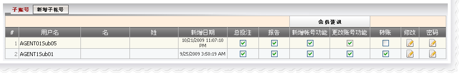
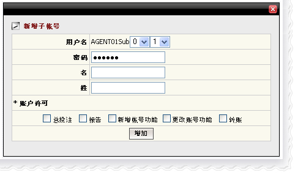

子账号
定义:
子账号是有限制权限可登陆代理系统的账号, 基本上子账号可以访问:
而这些权限都将由主账号设定。此外, 主账号也能够编辑子账号的名字, 姓氏及密码甚至关闭该子账号。

子账号
注:
- 要阻止子账号访问某些功能, 不选择该功能的复选框,反之亦然。
- 要关闭账号, 单击在 "编辑" 栏中的图标。
- 要更改密码, 单击在 "密码" 栏中的图标。
- 只可以创建10个子账号。
如何创建子账号?
第一步: 点击"新增子账号"按钮
第二步: 从下拉列表中选取一个数字作为子账号的用户名。
格式: [主账号] [Sub][1][2] , 例如: AgentSub01
第三步: 输入密码 (注意: 密码必须最少6个字符,其中包括至少2个号码和2个数字).
第四步: 选取个别功能(总投注,报告,新增账号功能,更改账号功能及转账)以授予子账号权限。
第五步: 点击"增加"键以完成新增子账号。

新增子账号